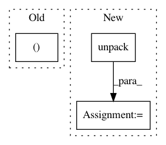

cc80175c2704c0dbbfe908f6b678c84ef1741a56,onmt/Models.py,Encoder,forward,#Encoder#Any#Any#,28
Before Change
h_size = (self.layers * self.num_directions, batch_size, self.hidden_size)
h_0 = Variable(emb.data.new(*h_size).zero_(), requires_grad=False)
c_0 = Variable(emb.data.new(*h_size).zero_(), requires_grad=False)
hidden = (h_0, c_0)
outputs, hidden_t = self.rnn(emb, hidden)
return hidden_t, outputs
After Change
emb = self.word_lut(input)
outputs, hidden_t = self.rnn(emb, hidden)
if isinstance(input, tuple):
outputs = unpack(outputs)[0]
return hidden_t, outputs
class StackedLSTM(nn.Module):
In pattern: SUPERPATTERN
Frequency: 3
Non-data size: 3
Instances
Project Name: OpenNMT/OpenNMT-py
Commit Name: cc80175c2704c0dbbfe908f6b678c84ef1741a56
Time: 2017-03-22
Author: bryan.mccann.is@gmail.com
File Name: onmt/Models.py
Class Name: Encoder
Method Name: forward
Project Name: nipy/dipy
Commit Name: 5527ec28d162846fc501568560352cf09c4494ca
Time: 2010-03-09
Author: matthew.brett@gmail.com
File Name: dipy/io/csareader.py
Class Name:
Method Name: read
Project Name: keras-team/keras
Commit Name: 0c842391d34d444393ab0f55382d11a4c5105994
Time: 2016-12-19
Author: xihuil.silence@gmail.com
File Name: keras/backend/tensorflow_backend.py
Class Name:
Method Name: dot